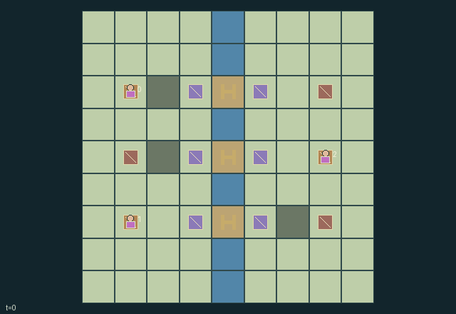

GI196 · Beacon Marches

Original recording scope: Role 0 actual visible view · Mode: Actual diagnostic replay
Additional generated state replay (different trajectory / full-state debug)

Supply each polity's opposite-bank outpost twice before any outpost defense reaches zero; manage couriers, fuel, relay information and timed passage agreements.
Identity and original contract
3 independently actionable roles; 12 discrete commands per role; 301 native observation columns per role; original horizon 90 steps. Declared per-step reward range: -3 to 4. Observation regime: partially_observable.
Source SHA-256: b92429afa8deddf0ef620259fd2bd55df3d2b2b81d20409f875a4d556d1d8750
The objective, rewards, population, map and horizon remain original. A preview is not a success claim.
Objective and gameplay
Supply each polity's opposite-bank outpost twice before any outpost defense reaches zero; manage couriers, fuel, relay information and timed passage agreements.
One polity's offer changes another's legal council choices; acceptance creates temporary pass access and access to the grantor's powered beacon information. Supply investments compete with delivering and defending each polity's outpost.
- The native cycle is council, march, works; only actions for the current phase are legal.
- At home in council, spend one carried supply to offer another role passage. The recipient must accept in a later council and spend one supply.
- Offers last three works ticks. Accepted grants last four; acceptance wins over simultaneous renewal, and commitments cannot be revoked early.
- During march, a courier may enter a pass only as its owner or under that owner's active grant. Leaving an expired pass remains possible.
- During works, load at home, deliver at your opposite-bank outpost, or spend one supply to build/refuel a nearby relay socket.
- A powered relay reveals radius-three route information to its owner and current accepted guests. Dark relays reveal no surrounding terrain.
- Every fifteen raw steps, all public defenses lose one. A delivery restores two defense, capped at six.
- Hidden route obstructions come only from the reset key. Public agreement and local scene displays use the same native state as policies.
Ending: Failure when any defense is zero after pressure. Otherwise success when every outpost has at least two deliveries. If these coincide, defense loss prevents success; both are natural completion, with natural causes taking priority over H.
Advance the council phase before expecting march controls; actions depend on the current phase.
What this game explores
Information, sensing & communication: Who knows a fact, when it was measured, and whether it was communicated are separate state variables. Test memory or communication using only the same role-visible evidence.
Commitment, exchange & governance: Promises consume time, liquidity, access or material. Separate an announced agreement from a binding commitment and from its eventual delivery; log cancellation and expiry too.
Complementary production & service: A useful outcome requires ordered stages, scarce equipment or another role's capability. Measure real completed products and resource circulation rather than counting intermediate actions as success.
Joint transport & shared access: Positions, load geometry, occupancy and persistent access constrain whose action can succeed next. Distinguish physical handoff, shared controls and simultaneous force from a cosmetic cooperation label.
Survival, protection & rescue: Protection and repair alter another role's future feasible actions. Record losses, exposure, rescue and infrastructure as well as delivery; survival is determined by the actual kernel.
These are questions supported by rule structure, not observed learning effects.
Play it: operating walkthrough
crucibles play --game gi196Keep Python running and open its printed address. Select this game, set a seed and press Create session. The game itself is always English.
Assign a role range to Host with Assign / take over, or Assign all roles. Invite a second participant with Create player invitation, then assign a disjoint subset. Every original role is available.
For every owned role choose a legal command and press Queue. Arrow keys / WASD queue a declared directional action for the current role camera when available. Space or Advance one joint step advances everyone together. Non-directional games use the selectors.
Unqueued roles use the labelled untrained uniform-legal policy. Take over or release roles before the next step without resetting. Full-state debug is privileged and permanently logged; role cameras preserve permissions. Close the session to retain logs. Server restart does not restore sessions.
Complete command reference
IDs and English labels exactly match the manifest. Availability depends on role, resources, location and phase. An available action can still have no productive effect.
0·Wait / decline by doing nothing
1·North during march
2·East during march
3·South during march
4·West during march
5·Load up to two supplies at own home during works
6·Deliver one supply at own outpost during works
7·Build or refuel an accessible relay socket during works
8·At home in council: offer passage to next role (i+1 mod 3)
9·At home in council: offer passage to previous role (i+2 mod 3)
10·At home in council: accept next role's pending offer
11·At home in council: accept previous role's pending offer
Roles and capability identifiers
These original role names describe capabilities, not interchangeable skins. Check each owned role's legal selector before planning handoffs.
agent_0·Amber polity courier; owns southern pass
agent_1·Azure polity courier; owns northern pass
agent_2·Violet polity courier; owns central pass
Information and observation permissions
Partially observable. Every role sees Manhattan radius two around its courier and radius three around its own powered relays or relays owned by a polity currently granting it passage. Other roles' couriers, cargo and home stocks are masked outside revealed cells; owned home and owned beacon telemetry remain known. Public outposts/defenses, pass locations/owners, pending offers, accepted agreement timers and specified public events are broadcast. The world map declares map_visible and never public=true. Hidden map/objects are -1 in the flat observation with explicit visibility bits. Role renderers bind the same masks; hidden blocked-move events and unrevealed refuel events are not public event channels.
The GIF is full-state debug and may reveal hidden entities or private state. Train on obs[agent], not the picture, state tree or another role's private row. Field slices and visibility are in the original manifest.
Reinforcement-learning integration
import jax
from crucibles_jaxmarl import make
env = make("gi196")
key = jax.random.PRNGKey(0)
key, rk, ak, sk = jax.random.split(key, 4)
obs, state = jax.jit(env.reset)(rk)
actions = env.sample_actions(ak, state)
obs, state, rewards, dones, info = jax.jit(env.step_env)(sk, state, actions)
done = dones["__all__"]Observations are float32 vectors of width 301; actions are scalar int32; masks have 12 entries. Supply all 3 roles each transition. Masked sampling is an engineering reference, not a trained learner.
step_env retains terminal data without reset. step performs outer autoreset and keeps terminal data in info["raw_state"] and info["raw_observation"]. Use dones["__all__"] for episode boundaries; separate completion, failure and time limit in analysis.
JIT or vmap equal identities and shapes. Split independent reset, policy and transition keys. Group different shapes explicitly; do not shrink the population or horizon. Host rendering stays outside training.
Training questions and fair evaluation
Define valid completion from the objective before fitting. Preserve original rewards and also report real deliveries/services, losses, resource state, unresolved episodes and per-role returns. Animation is not a reward signal.
Who knows a fact, when it was measured, and whether it was communicated are separate state variables. Test memory or communication using only the same role-visible evidence.
Promises consume time, liquidity, access or material. Separate an announced agreement from a binding commitment and from its eventual delivery; log cancellation and expiry too.
A useful outcome requires ordered stages, scarce equipment or another role's capability. Measure real completed products and resource circulation rather than counting intermediate actions as success.
Positions, load geometry, occupancy and persistent access constrain whose action can succeed next. Distinguish physical handoff, shared controls and simultaneous force from a cosmetic cooperation label.
Protection and repair alter another role's future feasible actions. Record losses, exposure, rescue and infrastructure as well as delivery; survival is determined by the actual kernel.
Compare memory, communication or centralized critics under matched actor information. Declare critic access; keep actor inputs role-filtered. Match partner/opponent distributions, masks, compute and checkpoint selection. Final tests never enter fitting or selection.
Independent training runs or source-pairing blocks are inferential units; episodes from one policy are not independent training replications. Save hashes, keys, versions, device, time and cost. Negative, zero, failed and indeterminate outcomes are valid. No trained checkpoint or target score is supplied.
Classification and evidence
Overlapping editorial labels are reading aids, not proof of novelty, difficulty, strategic equivalence or learning effects.
- Information, sensing & communication
- Evidence
manifest.task.observation_access: Partially observable. Every role sees Manhattan radius two around its courier and radius three around its own powered relays or relays owned by a polity currently granting it passage. Other roles' couriers, cargo and home stocks are masked outside revealed cells; owned home and owned beacon telemetry remain known. Public outposts/defenses, pass locations/owners, pending offers, accepted agreement timers and specified public events are broadcast. The world map declares map_visible and never public=true. Hidden map/objects are -1 in the flat observation with explicit visibility bits. Role renderers bind the same masks; hidden blocked-move events and unrevealed refuel events are not public event channels.
- Evidence
scene.rules.5: A powered relay reveals radius-three route information to its owner and current accepted guests. Dark relays reveal no surrounding terrain.
- Commitment, exchange & governance
- Evidence
manifest.task.interaction: One polity's offer changes another's legal council choices; acceptance creates temporary pass access and access to the grantor's powered beacon information. Supply investments compete with delivering and defending each polity's outpost.
- Evidence
manifest.task.observation_access: Partially observable. Every role sees Manhattan radius two around its courier and radius three around its own powered relays or relays owned by a polity currently granting it passage. Other roles' couriers, cargo and home stocks are masked outside revealed cells; owned home and owned beacon telemetry remain known. Public outposts/defenses, pass locations/owners, pending offers, accepted agreement timers and specified public events are broadcast. The world map declares map_visible and never public=true. Hidden map/objects are -1 in the flat observation with explicit visibility bits. Role renderers bind the same masks; hidden blocked-move events and unrevealed refuel events are not public event channels.
- Evidence
manifest.actions.8: At home in council: offer passage to next role (i+1 mod 3)
- Complementary production & service
- Evidence
manifest.task.objective: Supply each polity's opposite-bank outpost twice before any outpost defense reaches zero; manage couriers, fuel, relay information and timed passage agreements.
- Joint transport & shared access
- Evidence
manifest.task.objective: Supply each polity's opposite-bank outpost twice before any outpost defense reaches zero; manage couriers, fuel, relay information and timed passage agreements.
- Evidence
manifest.task.interaction: One polity's offer changes another's legal council choices; acceptance creates temporary pass access and access to the grantor's powered beacon information. Supply investments compete with delivering and defending each polity's outpost.
- Evidence
manifest.task.observation_access: Partially observable. Every role sees Manhattan radius two around its courier and radius three around its own powered relays or relays owned by a polity currently granting it passage. Other roles' couriers, cargo and home stocks are masked outside revealed cells; owned home and owned beacon telemetry remain known. Public outposts/defenses, pass locations/owners, pending offers, accepted agreement timers and specified public events are broadcast. The world map declares map_visible and never public=true. Hidden map/objects are -1 in the flat observation with explicit visibility bits. Role renderers bind the same masks; hidden blocked-move events and unrevealed refuel events are not public event channels.
- Survival, protection & rescue
- Evidence
manifest.task.objective: Supply each polity's opposite-bank outpost twice before any outpost defense reaches zero; manage couriers, fuel, relay information and timed passage agreements.
Source, receipts and preview limits
The additional generated state GIF replays saved untrained legal actions through the original kernel. At most 25 actual endpoints include initial and terminal state; no invented interpolation. It is full-state debug, not the role observation. Where an original scene preview exists, it is displayed first with its own recorded information scope. The two recordings may use different trajectories and views.
Original source, observation slices, manifest and mechanism
Native receipt · Presentation receipt
Engineering passes do not establish learning. Nonzero floating differences remain recorded and undetermined; no new tolerance was introduced. Human scores remain unverified.